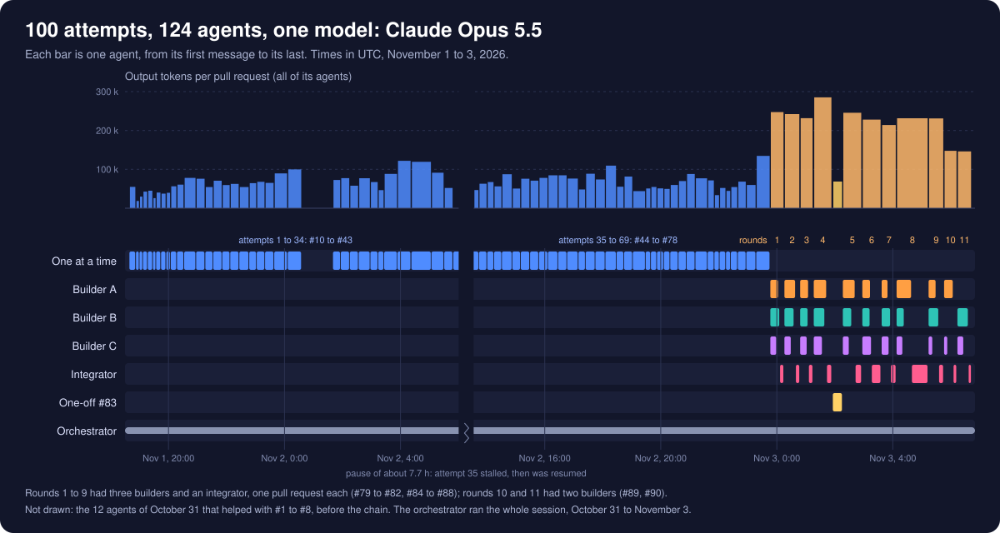

The story
Twenty old programs, brought back to play
These Java desktop programs were written more than ten years ago, and for most of them the source code was gone. This is how they were recovered from what was left, fixed up, and put in your browser, with the real code and the apps themselves along the way.
The source of inspiration for this project is the YouTube video I Told Claude to “Make it better” 100 Times (It Went Too Far) by Nate Herk | AI Automation.
Chapter 1
The originals
The author wrote them in high school, while learning programming concepts with Java, as Java Swing and AWT desktop programs: games, toys, music tools and small utilities.
Fourteen of them were published as jars and zips on the author's site. The files inside carry timestamps from April 28 to May 16, 2016. ScreenSaver's are the oldest.
The other six came from the author's own files, with no dates recorded. Four of those were still the original Eclipse source.
One date survives inside an app: Stock Checker saved its last quotes to a file, and they are from Friday, May 13, 2016.
| Symbol | Price | Change | Date | Time |
|---|
Chapter 2
The recovery
With the source gone, the code was rebuilt from the compiled programs. The first eight were downloaded from the author's site and decompiled with Vineflower 1.10.1. Six more were no longer on the site, but turned up in the git history of its repo. The last six came from the author's own files.
Most of the jars had been obfuscated, so the decompiled classes were called a, b,
c and their locals var1, var2. Every one of those names was replaced with
a descriptive English one, without changing any logic.
Here is Flappy Bird's bird, exactly as it came out of the decompiler. Press Rename to watch it become readable: the same code, token for token.
From the repo's first commit (4fea701, decompiled) and #1 (renamed). Today's Flappy Bird source
Chapter 3
The first restoration
- A README for every app, with its controls and its known quirks, and
run.ps1to build and run any of them. - Modernized all 20: the bugs each README listed were fixed (Minesweeper's mine count and flood fill, Ultimate Tic-Tac-Toe's winner check and many more), keeping each app recognizably itself.
- Into the browser: 16 of the 20 were compiled to JavaScript with TeaVM, on a hand-written AWT, Swing and MIDI layer that draws the original windows in the page.
That state is what every app's Then version plays today. Try one, then switch to Now to see how far it has come since.
Then: the recovered code with light bug fixes, as first restored.
Chapter 4
The Claude Code chain
From then on, the changes were made by a chain of Claude Code agents. Each got the same task: look at the project and make one bold change that improves the experience. Later they worked in rounds of three at once, one on a game or toy, one on a tool or music app and one on the site, merged by a fourth.
- The site around the appsa home page with a live player, a passport, a touch controller, skins, sounds, title screens, a source viewer and share cards.
- The apps themselvesa deeper pass for every app, until all 20 ran in the browser, even the ones that press keys, on a pretend Windows.
- Across apps and the whole siteThen and now, game controllers, screen readers, instant replay, the computer playing the games, and much more app work.
The numbers on the right are counted from the repo's own history, the same one the home page's What's new reads.
Chapter 5
The run in numbers
The 100 attempts became pull requests #10 to #90: 69 made one at a time, then eleven rounds in which two or three agents built at once and an integrator merged their work, plus the one-off #83 that wrote the history.
Every agent, and the orchestrator session that started them and read their reports, ran on
Claude Opus 5.5 (claude-opus-5-5) in Claude Code. The usage of all 124 finished agents was
found in their transcripts.
Almost all of the tokens are the same context read again from the prompt cache on each turn; the output, what the agents actually wrote, is the smaller number. The orchestrator is counted on its own line, and the agent making the final pull request is not counted.
That final pull request also replaced the pictures some apps had taken from the apps they imitated (Flappy Bird's art, a Bible app's icon, Chrome's dinosaur, a Windows mine) with original art, and added a Download .jar link to every app page, to run each app on the desktop with Java 17 or newer.


- Agents (124)7,769,877 output
- of which the 100 attempts (111 agents)6,978,117 output
- Agents, all tokens incl. cache reads1,551,728,877
- Orchestrator522,249 output
- Orchestrator, all tokens incl. cache reads181,962,955
- Tool calls by the agents15,299
- From the first attempt to the lastabout 36 hours
The 36 hours include a pause of about 7.7 hours while attempt 35's agent was stalled. The breakdown is in HISTORY.md.
Now it's your turn
All 20 are on the home page, ready to play. Each one keeps its Then version, its Java source and a .jar for the desktop a click away.